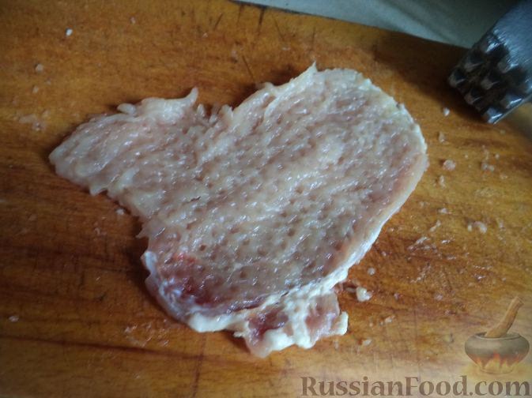
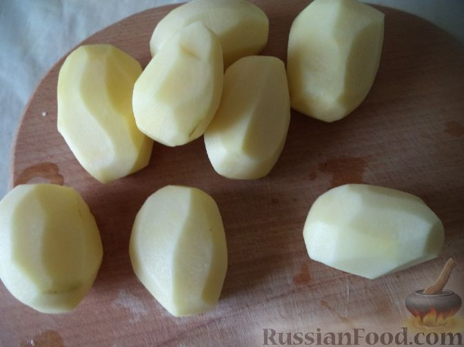
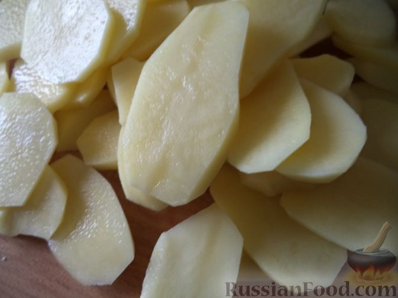

Картошка по-французски

Продукты
Картофель - 7 шт.
Масло - 50 г
Свинина (отбивные) - 300 г
Лук репчатый - 2 шт.
Майонез - 100-150 г (по вкусу)
Сыр твердый - 150 г (по вкусу)
Соль - 1-2 ч. ложки (по вкусу)
Перец - 0,25 ч. ложки (по вкусу)
Способ приготовления

1. Мясо помыть, осушить, нарезать толщиной около 1 см.

2. Мясо отбить кухонным молотком.

3. Картофель почистить, помыть. Включить духовку.
4.
Лук репчатый почистить, помыть и нарезать тонкими полукольцами.

5. Очищенный картофель нарезать пластинами толщиной 3-4 миллиметра.
6.
Сковороду без ручки смазать маслом. Выложить половину картофеля на сковороду, посолить.
7. Сверху выложить кусочки отбитого мяса так, чтобы полностью закрыть слой картошки. Посолить и поперчить.
8. На мясо выложить лук, нарезанный полукольцами.
9. А затем - слой картофеля.
10. Посолить и обильно смазать майонезом.
11. Поставить сковороду в духовку на среднюю полку. Запекается картошка по-французски в разогретой до 180°С духовке 40 минут.
12. Твердый сыр натереть на крупной терке.
13. Через 40 минут после начала запекания (за 5-10 минут до готовности) достать сковороду из духовки, посыпать блюдо тертым сыром. Поставить картошку по-французски в духовку на 5-10 минут.
14. Картошка по-французски готова. Подавать горячей.
Приятного аппетита!